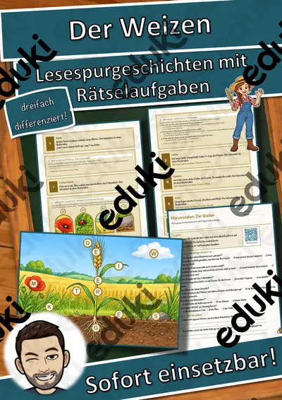
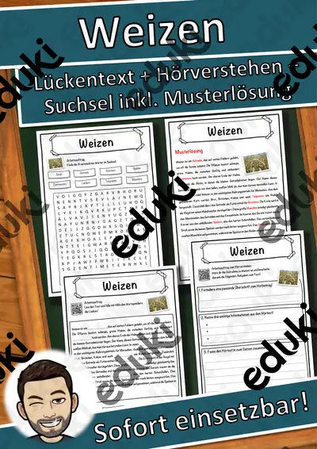
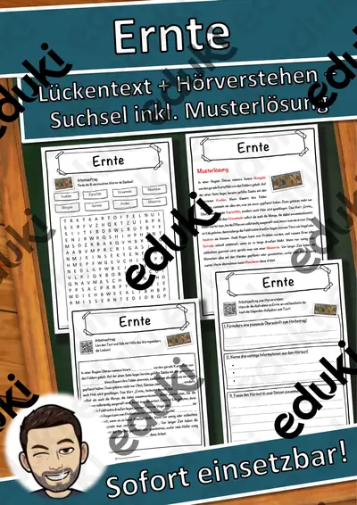
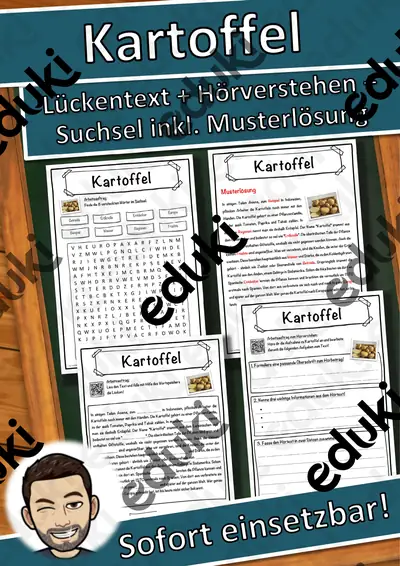
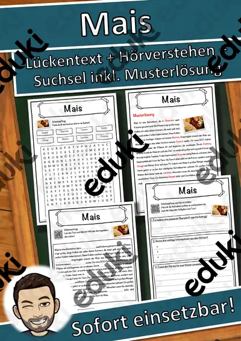

Landwirtschaft und Ernte: Arbeitsblätter für Klasse 4–9 (Erdkunde)
Landwirtschaft ist Grundlage der Ernährung und Thema der Erdkunde. Ackerbau und Viehzucht, Ernte und Verarbeitung werden vom Hof bis zum Handel verfolgt.
Typische Bausteine der Einheit sind Ackerbau, Getreide und Viehzucht; darauf aufbauend kommen Ernte, Ökolandbau und Hof und Handel zur Sprache.
Die Lehrpläne der Länder sehen das Thema im Fach Erdkunde vor, in der Regel in den Klassen 4 bis 9. Als Ziel gilt: die Schülerinnen und Schüler beschreiben den Weg eines Lebensmittels vom Feld in den Laden.
Im Alltag einer Lehrkraft zählt, dass Material sofort einsatzbereit ist: Die Blätter zu Landwirtschaft und Ernte greifen Getreide, Viehzucht und Ernte auf, lassen sich ausdrucken und kommen mit Lösungen, damit die Vorbereitung kurz bleibt. Leistungsstarke und schwächere Lesende erhalten über die Lesespurgeschichten Texte in drei Stufen.
Die Auswahl zum Thema umfasst derzeit 23 Titel, zum Beispiel Wortgitter-Suchsel: Bauernhof, Ich habe, wer hat? Bauernhof und Memory: Bauernhof. Dazu zählen 3 Lesespurgeschichten, 1 Prüfungstraining und 9 Lückentexte mit Hörverstehen für Klasse 3–8. Eine Betriebserkundung bei einem Landwirt der Umgebung gibt Antworten aus erster Hand.
Das gehört zum Thema
Passende Arbeitsblätter und Materialpakete

Der Weizen – Lesespurgeschichte mit Rätselaufgaben (Klasse 8)

Der Bauernhof – Lesespurgeschichte mit Rätselaufgaben (Klasse 7)

Die Landwirtschaft – Lesespurgeschichte mit Rätselaufgaben (Klasse 7)

Die Landwirtschaft – Prüfungstraining Erdkunde (Klasse 8)

Weizen Lückentext mit Wortspeicher Hörverstehen und Suchsel

Roggen Lückentext mit Wortspeicher Hörverstehen und Suchsel

Reis Lückentext mit Wortspeicher Hörverstehen und Suchsel

Getreide Lückentext mit Wortspeicher Hörverstehen und Suchsel

Ernte Lückentext mit Wortspeicher Hörverstehen und Suchsel

Landwirtschaft Lückentext mit Wortspeicher Hörverstehen und Suchsel

Kartoffel Lückentext mit Wortspeicher Hörverstehen und Suchsel

Mais Lückentext mit Wortspeicher Hörverstehen und Suchsel

Bauernhof Lückentext mit Wortspeicher Hörverstehen und Suchsel

Wortgitter-Suchsel: Bauernhof – Wortgitter – Klasse 1–4

Ich habe, wer hat? Bauernhof – Lese-Schleifen – Klasse 1–4

Memory: Bauernhof – Bild-Wort-Spiele – Klasse 1–4

Domino: Bauernhof – Bild-Wort-Spiele – Klasse 1–4

Wort-Bild-Karten: Bauernhof – Wort-Bild-Karten – Klasse 1–4

Himmel und Hölle: Bauernhof – Himmel und Hölle – Klasse 1–4

Sprechanlässe: Bauernhof – Sprechanlässe – Klasse 1–4

Klammerkarten: Bauernhof – Klammerkarten – Klasse 1–4

Lesen, Malen und Kleben: Bauernhof – Lesen und Malen – Klasse 1–4

Wortspiele: Sag es nicht! Bauernhof – Klasse 2–4
Häufige Fragen
Für welche Klassenstufe passen die Arbeitsblätter zu Landwirtschaft und Ernte?
Passend sind Klasse 3–8. Von den 23 Titeln wenden sich die meisten an Klasse 3, einige lassen sich differenzierend auch in benachbarten Stufen nutzen.
Welche Inhalte decken die Materialien zu Landwirtschaft und Ernte ab?
Die Materialien arbeiten an Ackerbau, Getreide und Viehzucht und gehen dann weiter zu Ernte, Ökolandbau und Hof und Handel. Vorab lohnt ein Blick in den Lehrplan des eigenen Bundeslandes.
Wie setze ich Landwirtschaft und Ernte im Unterricht ein?
Beginnen Sie mit einem Einstieg zu Ackerbau und ergänzen Sie nach Bedarf. Eine Betriebserkundung bei einem Landwirt der Umgebung gibt Antworten aus erster Hand.
Mehr Material nach Fach und Klasse
- Alle Materialien Biologie
- Arbeitsblätter Biologie Klasse 4
- Arbeitsblätter Biologie Klasse 5
- Arbeitsblätter Biologie Klasse 6
- Arbeitsblätter Biologie Klasse 7
- Arbeitsblätter Biologie Klasse 8
- Arbeitsblätter Biologie Klasse 9
- Unterrichtsmaterial Klasse 4
- Unterrichtsmaterial Klasse 5
- Unterrichtsmaterial Klasse 6
- Unterrichtsmaterial Klasse 7
- Unterrichtsmaterial Klasse 8
- Unterrichtsmaterial Klasse 9
Verwandte Lehrplanthemen
- Bauernhof und Nutztiere (Sachunterricht, Klasse 1–4)
- Bundesländer und Landeshauptstädte (Erdkunde, Klasse 3–7)
- Energie, Rohstoffe und Umwelt (Erdkunde, Klasse 4–10)
- Erdbeben und Vulkane (Erdkunde, Klasse 5–9)
- Rhein, Donau und die großen Flüsse (Erdkunde, Klasse 4–8)